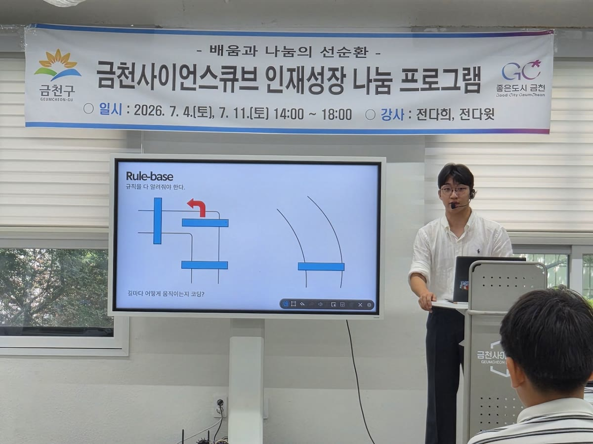
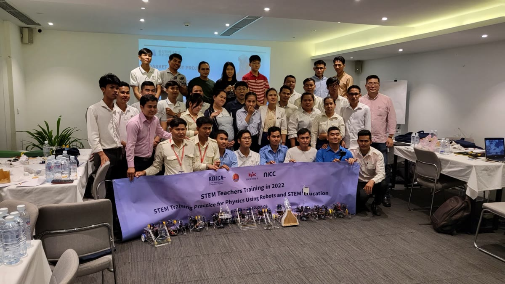
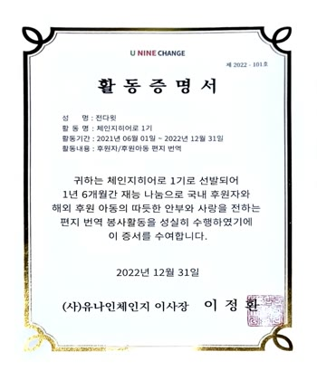
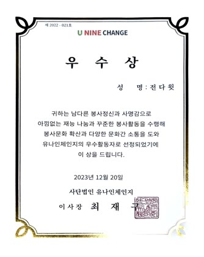
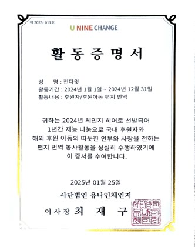
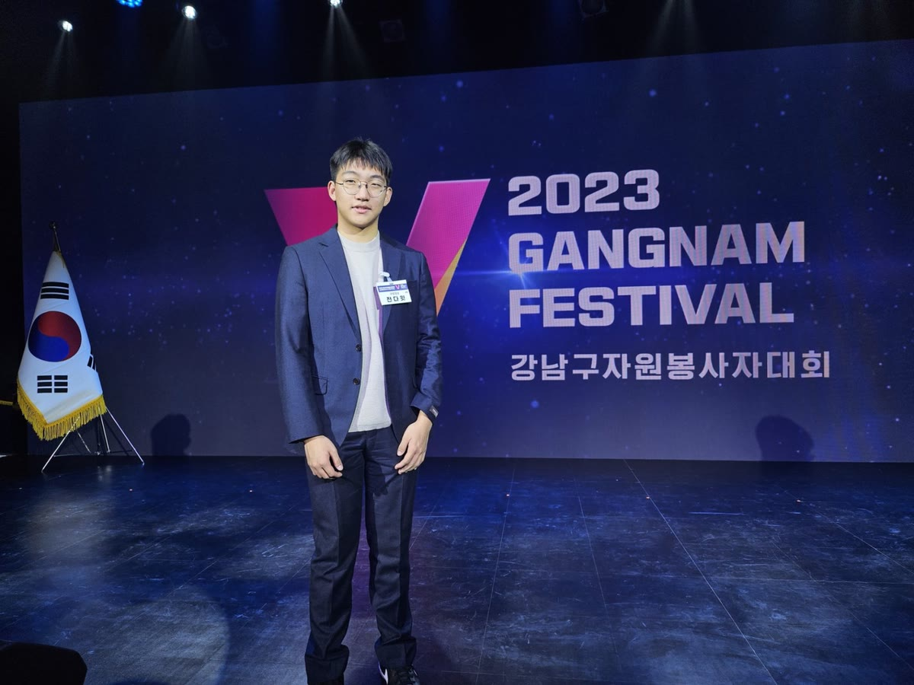
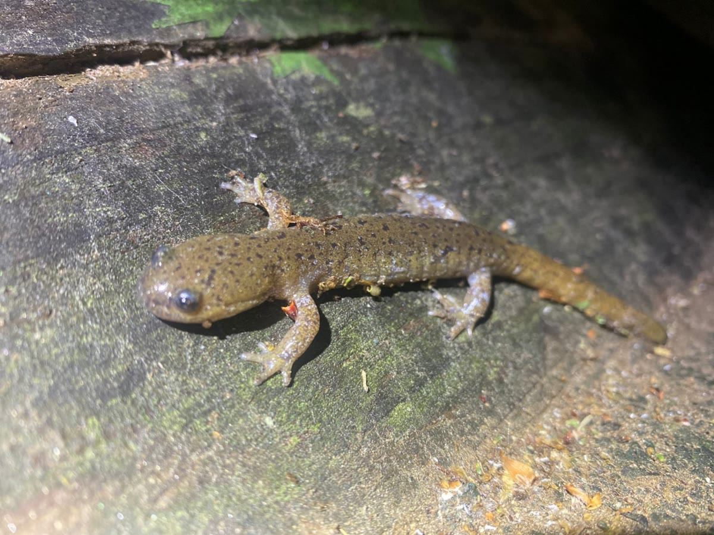
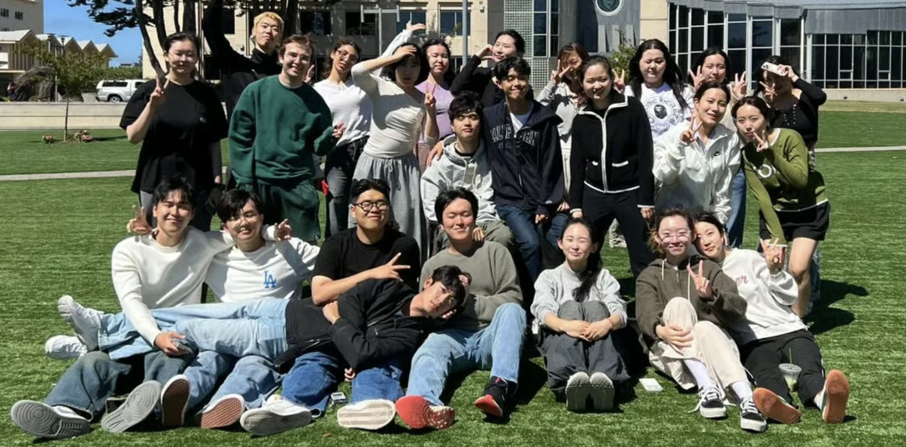

Teaching & Service
Teaching at Taejae and in my community, and volunteer work.
Teaching

July 202620 studentsGuest InstructorElementary students trained a self-driving car’s AI, from driving data to inference.- NS200XD221Fall 2025 and Spring 20262 coursesTeaching AssistantPhysics in San Francisco and quantitative thinking in New York, at Taejae.

July 2022 and July 20232 summersSTEM Teachers Training, CambodiaTeaching science teachers in Phnom Penh to build and program robots.
Service and volunteering



U9 Change certificates, 2021–22, 2023 (Excellence Award), and 20242021 to now5 years560 exchangesChange Hero, U9 ChangeExcellence AwardConnecting Korean sponsors with children from Kenya and South Sudan.
December 2023Mayor’s CommendationGangnam-gu Volunteers’ FestivalFor my volunteer work.
March to summer 2023Amphibian conservation, Gangnam-guNight surveys of salamanders, turned into campaigns and proposals to protect their habitat. Geumcheon-gu, Seoul28 studentsGeumcheon science programsBuilt a robot smart farm with my teammates, and mentored the district’s WRO team.
Geumcheon-gu, Seoul28 studentsGeumcheon science programsBuilt a robot smart farm with my teammates, and mentored the district’s WRO team.
20252 programsVice Student Body PresidentStarted Civic Center and Student-led Workshop at Taejae.
2021 to 2023Hosanna Church meal delivery: preparing and delivering meals to elderly residents who live alone in Geumcheon-gu, Seoul.